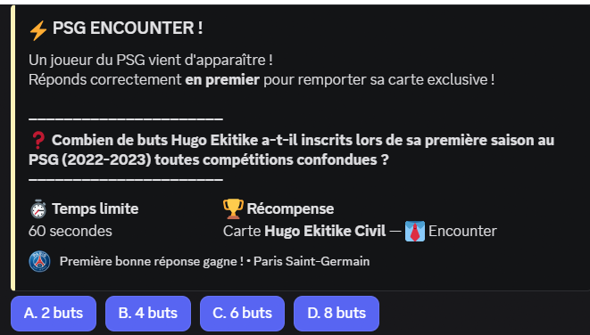
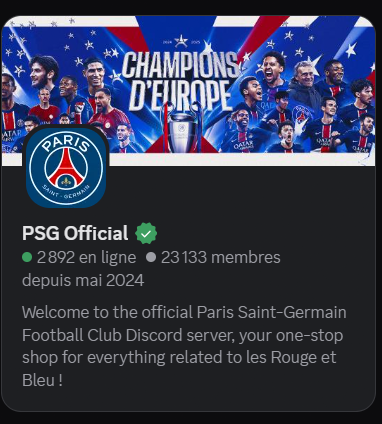

PSG
Dream League
Bot communautaire intégré au serveur Discord officiel du PSG, proposant un système complet de boosters, cartes collectors et monnaie virtuelle (PSG Coins), avec des composants interactifs utilisés quotidiennement par plusieurs milliers de membres.
Le contexte
PSG Dream League est un bot communautaire intégré au serveur Discord officiel du Paris Saint-Germain. Il propose une expérience interactive complète autour des cartes collectors, d'une monnaie virtuelle (PSG Coins) et d'un système de boosters permettant d'obtenir de nouvelles cartes.
Déployé en production, le bot est utilisé quotidiennement par plusieurs milliers de membres. Il est conçu pour garantir une stabilité constante, des performances élevées et une expérience fluide sur Discord.
« Un bot conçu pour tenir à l'échelle d'une communauté active — sans compromis sur la fiabilité. »
Les fonctionnalités
Le bot a été conçu pour transformer un serveur Discord en une expérience interactive complète autour de la collection et de la progression.
-
Système de boosters
Ouverture de boosters avec animations via embeds Discord, gestion des raretés et probabilités équilibrées pour chaque carte obtenue.
-
Cartes collectors
Système de collection avec plusieurs niveaux de rareté (Commun, Rare, Épique, Légendaire) et affichage enrichi directement dans Discord.
-
PSG Coins
Monnaie virtuelle du serveur permettant de gagner, échanger et utiliser ses crédits pour acheter de nouveaux boosters.
-
Slash commands
Interface entièrement basée sur les commandes natives de Discord pour une navigation claire et rapide.
-
Composants interactifs
Boutons, menus déroulants et modaux intégrés pour rendre l'expérience plus intuitive et interactive.
-
Persistance des données
Sauvegarde des collections, soldes et historiques pour garantir la continuité de l'expérience de chaque membre.
Stack technique
Le bot repose sur Discord.js v14, qui gère l'ensemble des interactions, événements et systèmes d'embed. L'architecture est construite autour de modules indépendants afin de faciliter l'évolution et la maintenance du projet.
Le backend est développé sous Node.js avec une structure orientée commandes, pensée pour rester scalable et lisible même à mesure que les fonctionnalités s'ajoutent.
La persistance des données est assurée par une base légère et performante, utilisée en asynchrone afin de garantir des performances stables sans bloquer les traitements du bot.
Le tout est déployé sur un serveur dédié avec redémarrage automatique et monitoring de stabilité pour assurer un fonctionnement continu en production.
Aperçu visuel

Photo Encounter
Photo PSG OfficielAperçus du bot en production sur le serveur Discord officiel du PSG